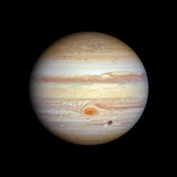

Planet Jupiter adalah planet terbesar dalam tata surya kita. Dikenal dengan ciri khasnya yang berbentuk seperti bola dengan garis-garis pita berwarna-warni, Jupiter merupakan raksasa gas yang tidak memiliki permukaan padat.
Jupiter memiliki sistem cincin yang sangat samar-samar dan banyak satelit alami. Salah satu satelit terkenalnya adalah Ganymede, yang merupakan satelit alami terbesar dalam tata surya. Jupiter memiliki medan magnet yang sangat kuat dan atmosfer yang kompleks dengan badai besar seperti Bintik Merah Besar.